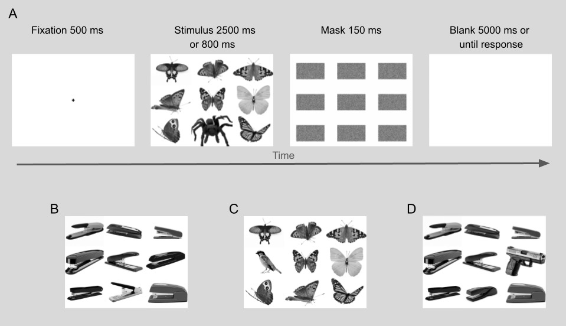
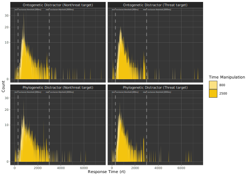
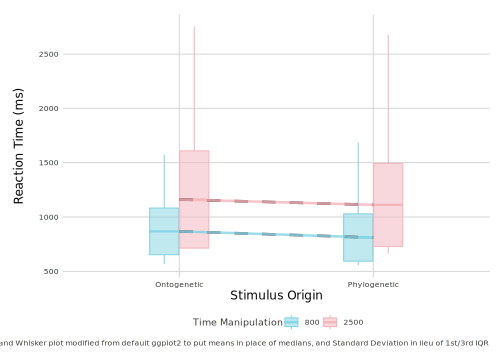
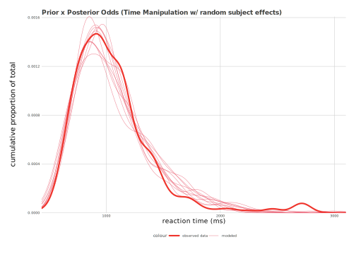
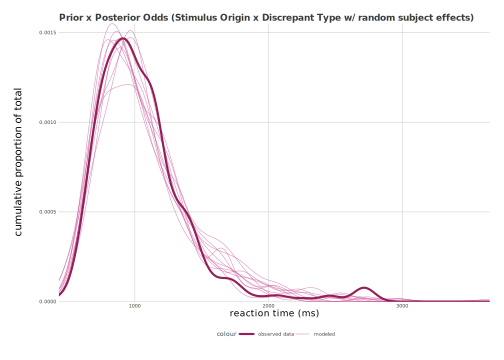

Effective Presentation Time of a Threat: Testing perception vs. judgment in a modified replication of Abado et al. (2023)
Authors
Michael Ferrante
Jacqueline Adelmann
Zhuo Cen
Loren Opbroek
Abstract
This study aimed to replicate and expand upon Abado et al.’s (2023) finding that adults show an attentional bias, meaning they tend to selectively focus on specific stimuli, toward organically-occurring threats, but not toward threats that are man-made. Similar to the visual discrimination task used in Abado et al., we measured participants’ average speeds in identifying images of organically-occurring (phylogenetic) items and man-made (ontogenetic) items that were either threatening or non-threatening. We also sought to investigate whether Abado et al.’s finding is due to judgment processes rather than the “top-down effect” that our beliefs can impact our perception (Firestone & Scholl, 2016). Towards this end, per Firestone and Scholl’s argument that many studies fail to distinguish perceptual processes from judgment processes, we added a shorter stimulus presentation time to the experiment to eliminate the potential for judgment processes to occur. Ultimately, we successfully replicated Abado et al.’s findings in both of the time conditions, although some findings had a smaller effect size or less robust statistical significance than Abado et al.’s did. We suggest that U.S. adults indeed exhibit a tendency to pay more attention to phylogenetic threats than to ontogenetic threats. We also tentatively suggest that this attentional bias is not due to judgment processes, and could potentially be a top-down effect. Among other suggestions, we would like future research to study whether these findings are specific to the images that Abado et al. used and continue the top-down effect investigation with EEG technology.
Introduction
Are certain fears “ready-made” to capture our attention faster than others? Is there a distinction between how people with a fear of snakes perceive snakes and how people with a fear of knives perceive knives? Built upon a history of investigation into the perception of “preparedness” as a category of distinct phobia (Hugdahl and Johnsen 1989; Seligman 1971), a recent visual discrimination experiment from Abado et al. found, in part, that participants identify images of organically-originating threats (spiders) faster than images of man-made threats (guns) (Abado, Aue, and Okon-Singer 2023). Abado et al. used these findings to suggest that attentional biases, the tendencies of individuals to pay more attention to certain stimuli or aspects of their environment over others, may differ between organically-occurring threats and man-made threats. In this study, we intend to discover both whether this finding is replicable and whether it is based solely in perceptual processes.
The theories preceding Abado et al. have largely suggested that there is indeed a difference between perceptions of types of threats. Seligman (1971) theorized in this direction by dividing the origin of fear into phobias, which are highly selective, resistant to change, and often acquired through single exposure event, and laboratory-induced fears, which are conditioned to any stimuli but fade rapidly. Hugdahl & Johnsen (1989) found evidence in support of Seligman’s hypothesis, suggesting an attentional bias towards evolutionary (phylogenetic) threats. It is not clear, though, whether this difference is a product of the “top-down effect” that our beliefs can impact our perception, or whether it involves more than perceptual processes (Firestone and Scholl 2015). Firestone & Scholl argue that the ostensible top-down effect findings in the literature suffered from pitfalls in the experimental designs, and we think that Abado et al.’s experimental design, in the context of the top-down effect, may have included one such pitfall: because the duration for which participants were shown images was long enough for participants’ perceptual and judgment processes to have occurred before they responded, the observed attention bias could have occurred after perception and therefore would not have been a top-down effect.
Building upon Abado et al., and considering Firestone and Scholl’s reservations, our modified replication will eliminate the potential for the so-called “perception vs. judgment” pitfall by including an additional condition with a reduced image presentation time of 800ms. Therefore, if the interpretation of Abado et al. holds, we hypothesize that at the original 2500ms stimuli presentation time and the new 800ms time, participants will detect spiders faster than birds and not detect guns faster than telephones. Our repeated measures ANOVA would reflect this by showing an interaction between the origin type of stimulus (phylogenetic/ontogenetic) and discrepant object type (threatening/non-threatening) on reaction time. Our pairwise comparisons would reflect this in our data by showing that participants react significantly faster, on average, to phylogenetic threats relative to phylogenetic non-threats, but do not react significantly faster, on average, to ontogenetic threats compared to ontogenetic non-threats. Thus, this modified replication will help us establish the reliability of Abado et al.’s attention bias findings and provide insights into the underlying cognitive processes involved in phylogenetic and ontogenetic threat detection.
Methods
Participants
The Vassar College Institutional Review Board approved this study. We recruited 75 English-speaking participants aged 18 years or older through the online web-recruitment platform Prolific, the same as used in the original study, paying each of them $2.60 for completing the experiment. All participants were residents of the United States. Though Abado et al. had 144 participants in their final analysis, our sample size was restricted by our budget.
We had pre-registered that we would exclude participants post-experimentally if they reported a history of neurological disorders or ADHD because Prolific does not allow researchers to screen for this information prior to a participant’s completion of the experiment; however, unfortunately, we did not gather this information and thus were unable to make these exclusions.
Directly following data collection but before beginning analysis, we gave the applet a once-over. We found an error in our experiment that caused a significant number (n=31) of participants to not receive both the 2500ms and 800ms time condition manipulations for both the phylogenetic and ontogenetic blocks of stimuli. As performing our pre-registered repeated-measures ANOVA analysis required that all individual participants be exposed to all independent variable manipulations, we excluded these participants from data analysis. We excluded the (n=1) participant who failed to respond with any valid keypress greater than 50% of the time.
Code
##Load and process behavioral data, filtering out those whom we cannot perform the RMANOVA on because they didn't get all time manipulations across all stimulus blocksdirectory <-"data/Data"file_list <-list.files(path = directory, recursive =TRUE, full.names =TRUE)csv_files <- file_list[grep("\\.csv$", file_list, ignore.case =TRUE)]dataframes <-list()for (file in csv_files) { dataframes[[file]] <-read.csv(file)}for (file in csv_files) { temp_df <-read.csv(file) dataframes[[file]] <- temp_df}data <-bind_rows(dataframes)result <-c()for (i inseq_along(dataframes)) { current_df <- dataframes[[i]]if (any(table(current_df$blocktype, current_df$time_manipulation) ==80)) { result <-c(result, names(dataframes)[i]) }}filtered_dataframes <-list()for (i inseq_along(dataframes)) { current_df <- dataframes[[i]]if (!any(table(current_df$blocktype, current_df$time_manipulation) ==80)) { filtered_dataframes[[length(filtered_dataframes) +1]] <- current_df }}data <-bind_rows(filtered_dataframes)
We also chose to exclude the (n=1) participant with unreliably inconsistent and problematic behavior, including incorrectly answering about half of the practice trials, over half of the trials in the last block, and a significant number of trials throughout all blocks wrong, despite having demonstrated valid responses on the keyboard multiple times. After these exclusions, (n=41) participants remained (14 male and 27 female).
We also identified two subjects whose response patterns did not match expected behavior, but nonetheless varied reliably in their divergence from expectation. In both cases, these two subjects (lx4ndEBa7j and ly4nYM8zD0) appeared to have mistaken the natures of the stimulus categories. Subject lx4ndEBa7j consistently responded in the phylogenetic blocks as though spiders were non-threatening, and ly4nYM8zD0 consistently responded in the ontogenetic response as though the telephones were threatening objects. We opted to include these subjects in the data analysis, as not only did they respond to the prompts in the practice round with a high degree of accuracy, but it is difficult to know, without having distributed a follow-up questionnaire, why precisely these subjects answered in the fashion they did. While it is possible that they misunderstood the tasks, it is also possible that they simply held non-normative views about the degree of threat posed by either spiders or phones, in which case their data, as nonetheless part of the target population, should be included.
Procedure
Pre-registration materials for this study are available on the Open Science Framework at https://osf.io/x5v6g. All data are available on the Open Science Framework at https://osf.io/k93an/. We used custom software deployed in a web browser with the jsPsych framework, which participants viewed via their own laptop or desktop (Leeuw, Gilbert, and Luchterhandt 2023).
Participants experienced a modified version of the experiment in Abado et al. (Figure 1A), which used the well-known “discrepant-object” paradigm for task construction, whereby an array of objects is juxtaposed, and subjects are made to determine which one of the objects is different from the rest. In each trial, participants initially saw a fixation cross (+) on their screen for 500ms. Next, participants saw a 3x3 grid of images. In half of the trials, the nine images were of organically-occurring items (phylogenetic). In the other half of the trials, the nine images were of a man-made origin (ontogenetic).

Figure 1: (A) Schematic of the visual discrimination task. (B) Example ontogenetic no discrepant stimulus. (C) Example phylogenetic non-threatening discrepant stimulus. (D) Example ontogenetic threatening discrepant stimulus
Within each 3x3 grid, participants saw at least eight distractor images: butterflies in the phylogenetic trials and staplers in the ontogenetic trials. Like Abado et al., we used this number of distractors to give the task some reasonable level of difficulty without being overly taxing. In ten percent of the trials, the ninth image was of another butterfly or spider, meaning participants viewed nine distractor images (Figure 1B). In forty-five percent of the trials, the ninth image was of a bird or old telephone, meaning participants viewed eight distractor images and one non-threatening discrepant image (Figure 1C). In the remaining forty-five percent of the trials, the ninth image was of a spider or gun, meaning participants viewed eight distractor images and one threatening discrepant image (Figure 1D). We were interested in analyzing the ninety percent of trials that contained a discrepant image, but we included the trials without a discrepant image both for true replication and to serve as attention checks.
Participants saw the 3x3 image grid for 2500ms in half of the phylogenetic trials and half of the ontogenetic trials, and 800ms in the other halves. We used 2500ms to replicate Abado et al. and 800ms to address the perception vs. judgment pitfall. We specifically chose 800ms because this was the shortest time frame that still preserved reasonable average accuracy rates of around eighty percent when we piloted our experiment on our peers; thus, we assumed that this time period mitigated the potential for judgment while still allowing participants to perceive stimuli.
After viewing the stimulus, participants saw a randomly generated 3x3 grid of masks for 150ms, whose contents were a flattened gaussian noise distribution. Their screen then remained blank for either 5000ms or until they responded, although participants were able to respond at any time upon a stimulus first appearing on their screen. Participants responded by either pressing the ‘P’ key on their keyboard to indicate that the stimulus contained one different and non-threatening image, the ‘Q’ key to indicate that the stimulus contained one different and threatening image, or the ‘SPACE’ bar to indicate that the stimulus did not contain a different image.
We used the jsPsych randomization feature to ensure that presentation time, origin type (phylogenetic/ontogenetic), and discrepant type were randomly assigned in every trial. Each image in each 3x3 grid was randomly selected from the bank of images specific to the intended image type (e.g., a grid containing nine phylogenetic distractors randomly selected nine images from the bank of butterfly images). No two trials were visually identical unless by random occurrence.
Participants completed four blocks of 90 trials in addition to 20 practice trials for true replication. We created the four blocks for participant experience; none of the four blocks performed a different procedure or were limited to a certain condition.
While Abado et al. used images with white backgrounds and images with complex backgrounds, we only used images with white backgrounds because we were not interested in overly complicating the design with additional variables that were not closely relevant to our research question. We sourced the same 665 white-background images that Abado et al. used and uploaded to their OSF page (https://osf.io/64nzq/), but sourced different practice trial images. In the practice trials, we used spoons as ontogenetic distractors, rulers as ontogenetic non-threatening discrepants, knives as ontogenetic threatening discrepants, kittens as phylogenetic distractors, bunnies as phylogenetic non-threatening discrepants, and tigers as phylogenetic threatening discrepants. Also, rather than either 800ms or 2500ms, the presentation times of practice trial stimuli decreased in intervals of 100ms from 3000ms to 1100ms so participants could ease into shorter time intervals prior to beginning the real trials.
Data Pre-Processing
We plotted a simple histogram of reaction time (ms), faceted by group and colored according to time conditions, to observe the response distributions and get a better sense of what responses might be considered outliers (Figure 2). Per our pre-registered qualitative approach to exclusion criteria, we looked for any participants whose reaction times, on average, were shorter than the bulk of responses (<300ms) or longer than the bulk of responses (>3000ms). No participant fit this criteria; however, as the individual reaction times outside of these thresholds were likely results of errors or unrepresentative of the population, we removed all individual reaction times that were less than 300ms or greater than 3000ms.
Code
## "Preprocessing II: Sample Cutoff Analysis"data$rt <-as.numeric(data$rt)data_clean <- data %>%filter(time_manipulation !=is.na(TRUE)) %>%filter(roundtype =="experimental") %>%filter(!task %in%c("Ontogenetic_Distractor_notarget", "Phylogenetic_Distractor_notarget")) data_clean_task <- data_clean %>%mutate(task =str_replace(task, "(\\w+)_(\\w+)_(\\w+)_(\\w+)", "\\1 \\2 (\\3 \\4)"))none <-ggplot(data_clean_task, aes(x = rt, y =stat(count), fill =factor(time_manipulation))) +geom_area(stat ="bin", binwidth =10, position ="identity") +scale_x_continuous(name ="Response Time (rt)") +scale_y_sqrt() +scale_fill_paletteer_d("MetBrewer::Signac") +theme_dark(base_size =8, base_family ="Ubuntu") +labs(y ="Count", fill ="Time Manipulation") +facet_wrap(~task) +theme(strip.text =element_text(size =7),plot.background =element_rect(fill ="transparent", colour =NA),panel.background =element_rect(fill ="grey21", colour =NA),legend.background =element_rect(fill ="transparent", colour =NA)) +geom_vline(xintercept =c(300, 3000), linetype ="dashed", color ="white", size =0.6, alpha =0.4) +annotate("text", x =1150, y =Inf, label ="min. exclusion threshold (300ms)", vjust =1.8, color ="white", size =1.2, angle =360, fontface ="italic") +annotate("text", x =3900, y =Inf, label ="max. exclusion threshold (3000ms)", vjust =1.8, color ="white", size =1.2, angle =360, fontface ="italic")print(none)

Figure 2: Histograms of reaction times for each trial type of interest. Dotted vertical lines represent the exclusion thresholds.
We conducted our analyses in the R environment, using the splithalf package for split-half analysis (Parsons 2021) as well as several packages from the tidyverse(Wickham et al. 2019; R Core Team 2024).
We performed our pre-registered split-half reliability, repeated measures ANOVA, and a Bayesian Mixed Modeling analysis for this experiment. We also performed post-hoc pairwise comparisons to expand upon our ANOVA findings and exploratory accuracy analysis to assess data quality. The split-half reliability analysis allowed us to assess the reliability of our data. ANOVA and pairwise comparisons allowed us to uncover main effects related to our hypotheses. The Bayesian Mixed Modeling, while not essential to our investigation, gave us insight into whether group-level differences in reaction time could be explained better by discrepant type than by presentation time.
Split-Half Reliability Analysis
In order to truly replicate Abado et al., we conducted split-wise analyses of attention bias. This allowed us to assess the degree to which, in each set of trials corresponding to a given pairing of independent variables, a given subject varied consistently in their attention bias (the difference between threatening and non-threatening trials). This gave us a solid proxy for the reliability of our sample. Shown in Figure 3, the distributions of reliabilities were roughly normal and centered with a mean around 0.77 for all configurations, which we found especially impressive given the aforementioned subjects who responded in unexpected ways. This suggests that participants were relatively consistent in their responses.
Figure 3: Split-half reliabiliy plots split by time manipulation (left) and stimulus character (right).
Exploratory Accuracy Analysis
Though we did not pre-register exploratory accuracy analyses, in the interest of ensuring that our task was sufficiently robust, we ran a separate ANOVA and pairwise comparisons on accuracy to assess whether meaningful discrepancies in difficulty between conditions existed in the data. While the results for the ANOVA showed highly significant effects of both origin type on accuracy and presentation time on accuracy, pairwise comparisons revealed that these effects were largely irrelevant to our analyses of reaction times (Figure 4). Pairwise methods made better sense of the latent sources of variance in the data, revealing that while approximately 1/4 of the post-hoc pairwise comparisons were significant, these difference estimates, in absolute terms, were unlikely to have much of a practical impact on the data quality surrounding our variable of interest. Indeed, the single largest estimated discrepancy between categories was an average drop of 3 questions. These results were reasonable, considering both the largest estimated discrepancy and our inclusion of the two aforementioned outlier subjects. If we, like Abado et al., were able to draw from more observations, it is very likely that these differences would not have been present.
Code
## This is the code we used to double-check the typing and further drill our dataset down to the parameters of interest.## Prepares dataset for ANOVA by ensuring all the variables are present and typed correctly for function calls to lmer, emmeans, and aov.filtered.data_plusanovagroups <- filtered.data %>%mutate(distractortype =sub("^.*?_.*?_(.*)$", "\\1", task),correct =as.logical(correct) ) %>%group_by(subject_id, unique_identifier, blocktype, distractortype, time_manipulation, task) %>%summarize(individual_subject_mean_rt =mean(as.numeric(rt), na.rm =TRUE),individual_subject_sd_rt =sd(as.numeric(rt), na.rm =TRUE),number_correct =sum(correct, na.rm =TRUE),total_responses =n(),subject_accuracy = number_correct / total_responses,subject_timeelapsed =max(time_elapsed, na.rm =TRUE) -min(time_elapsed, na.rm =TRUE), ) %>%ungroup(subject_id, unique_identifier)# set appropriate types for vars (if they represent factor related stuff)filtered.data_plusanovagroups$blocktype <-as.factor(filtered.data_plusanovagroups$blocktype)filtered.data_plusanovagroups$distractortype <-as.factor(filtered.data_plusanovagroups$distractortype)filtered.data_plusanovagroups$time_manipulation <-as.factor(filtered.data_plusanovagroups$time_manipulation)filtered.data_plusanovagroups$subject_id <-as.factor(filtered.data_plusanovagroups$subject_id)filtered.data_plusanovagroups$individual_subject_mean_rt <-as.numeric(filtered.data_plusanovagroups$individual_subject_mean_rt)
Focusing our attention to areas of interest, we then averaged reaction times by subject (across trials) along each of the three independent variables of interest: stimulus origin (ontogenetic/phylogenetic), discrepant type (threatening/non-threatening), and time manipulation (2500ms/800ms). We used these to visually gain a sense of general patterns in the data, as visible in Figure 5.
Code
## Graphs and Plots / Remappings for ggplot - main graph of means and the like to visualize what patterns of interest are encapsulated by the anova.janmeans_main <- filtered.data_plusanovagroups %>%filter(distractortype =="Threat_target")janmeans_aes1 <- filtered.data_plusanovagroups %>%filter(distractortype =="Threat_target") %>%group_by(blocktype, time_manipulation) %>%summarize(point_mean =mean(individual_subject_mean_rt), point_sd =mean(individual_subject_sd_rt)) %>%filter(time_manipulation =="2500")janmeans_aes2 <- filtered.data_plusanovagroups %>%filter(distractortype =="Threat_target") %>%group_by(blocktype, time_manipulation) %>%summarize(point_mean =mean(individual_subject_mean_rt), point_sd =mean(individual_subject_sd_rt)) %>%filter(time_manipulation =="800")aes_data <- janmeans_main %>%group_by(blocktype, time_manipulation) %>%summarise(lower =mean(individual_subject_mean_rt) -sd(individual_subject_mean_rt),middle =mean(individual_subject_mean_rt),upper =mean(individual_subject_mean_rt) +sd(individual_subject_mean_rt),ymin =min(individual_subject_mean_rt),ymax =max(individual_subject_mean_rt),.groups ="drop" )base_size <-1.21top_size <-1.20new_graph <-ggplot(aes_data, aes(x = blocktype, y = middle, color = time_manipulation, fill = time_manipulation)) +geom_boxplot(aes(lower = lower, upper = upper, ymin = ymin, ymax = ymax, middle = middle, alpha =0.1),stat ="identity", position =position_dodge(width =0.31), width =0.3, alpha =0.5) +xlab("Stimulus Origin") +geom_line(data = janmeans_aes1, aes(x = blocktype, y = point_mean, group = time_manipulation), linetype ="dashed", size = base_size, alpha =0.9, color ="#401419") +geom_line(data = janmeans_aes2, aes(x = blocktype, y = point_mean, group = time_manipulation), linetype ="dashed", size = base_size, alpha =0.8, color ="#401419") +geom_line(data = janmeans_aes1, aes(x = blocktype, y = point_mean, group = time_manipulation), linetype ="solid", size = top_size, alpha =0.8) +geom_line(data = janmeans_aes2, aes(x = blocktype, y = point_mean, group = time_manipulation), linetype ="solid", size = top_size, alpha =0.8) +labs(color='Time Manipulation', fill='Time Manipulation') +scale_color_paletteer_d("wesanderson::Moonrise3") +scale_fill_paletteer_d(`"wesanderson::Moonrise3"`) +theme_fivethirtyeight(base_size =9.5, base_family ="Ubuntu") +theme(axis.title.x =element_text(color ="black", size =12),axis.title.y =element_text(color ="black", size =12, margin =margin(20, 20, "pt")),plot.background =element_rect(fill ="transparent", color =NA),panel.background =element_rect(fill ="transparent", color =NA),legend.background =element_rect(fill ="transparent", color =NA)) +ylab("Reaction Time (ms)") +labs(caption ="Note: Box and Whisker plot modified from default ggplot2 to put means in place of medians, and Standard Deviation in lieu of 1st/3rd IQR")print(new_graph)

Figure 5: Average reaction time as a function of time manipulation and stimulus origin. These box and whisker plots show mean instead of median, as well as standard deviation in lieu of first and third IQRs”
RMANOVA and Pairwise Comparison Analyses
We then conducted a repeated-measures 3x2 ANOVA on reaction time (with dF=40 residuals for within-subjects random factors, and dF=6 between-subjects interactions between our IVs). We pre-registered a 2x2 RMANOVA because we originally intended to combine origin type and discrepant type into one independent variable. However, after data collection, we realized that initializing a comparison involving time manipulation, origin type, and discrepant type separately would provide more granular insight as to the extent of effects on reaction time contributed by each variable.
In our RMANOVA, we failed to find a significant effect of stimulus origin type on the patterns of reaction time exhibited by participants across all trials (F=0.077, p=0.7819; compare to Abado et al.’s F=10.88, p=0.001). Inconsistent with Abado et al., this suggests that participants did not respond at a different speed solely depending on whether a stimulus was made up of organically-occurring images or man-made images. We found a highly significant impact of our time manipulation on the speed of subjects’ responses (F=194.616, p<0.0001), suggesting that participants responded faster when a stimulus was shown for 800ms compared to 2500ms. Also, we unsurprisingly found a highly significant impact on variance within reaction time of threatening relative to non-threatening discrepants in stimuli (F=34.508, p < .0001; compare to Abado et al.’s F=18.07, p < 0.001). This effect, consistent with and even greater than Abado et al.’s observed effect, suggests that participants responded faster when the discrepant image in a stimulus was a threat compared to when it was a non-threat. While important to note, especially in regards to replicating Abado et al., none of these findings directly concern the research question at hand.
Most relevant in our RMANOVA to our hypotheses, we found a significant interaction effect between origin type and discrepant type on reaction time (F=6.285, p=0.0127; compare to Abado et al.’s F=173.75, p < 0.001), though the effect was not as large nor as significant as Abado et al.’s observed effect. Tentatively consistent with Abado et al., this suggests that origin type and discrepant type, in combination, affect reaction times in a way that cannot be explained by the individual effects of each factor alone. We used post-hoc pairwise comparisons to uncover more information related to this finding.
While we did not pre-register post-hoc pairwise comparisons, we realized after data collection that these would be integral to our assessment of whether we replicated the crucial findings in Abado et al. (2023). They informed us of each individual interaction amongst the variables in the data, providing directionality and a measure of significance in each comparison. Using Tukey HSD as the test statistic in these comparisons, we found that participants’ average detection of spiders was about 243.91ms faster than of birds in the 2500ms time condition (SE=47.46, dF=280, t=5.140, p<0.0001) and about 153.817ms faster in the 800ms time condition (SE=47.45, dF=280, t=3.242, p=0.0287). This suggests that, on average, participants detected phylogenetic threats faster than phylogenetic non-threats in both time conditions. These two effects were consistent with and of even greater effect sizes than Abado et al.’s finding of a 136.13ms faster reaction time to spiders than to birds (p<0.001), although it is notable that the statistical significance of the effect in our 800ms condition was much less robust than the effect in our 2500ms condition or Abado et al.’s finding.
We did not find any statistically significant difference in average detection of guns and telephones in either time condition (for the 2500ms condition: t=2.1716, p=0.372; and the 800ms condition: t=1.1956, p=0.933; Abado et al.’s effect size unknown, p>0.05). Also consistent with Abado et al.’s finding, this suggests that, on average, participants did not detect ontogenetic threats faster than ontogenetic non-threats. These findings tentatively both replicate Abado et al. and suggest that participants showed an attention bias towards phylogenetic threats even when the duration for which they saw a stimulus was not long enough for judgment processes to occur.
We also found that participants detected phylogenetic threats 152.44ms faster, on average, than ontogenetic non-threats in the 2500ms time condition (t=3.2125, p=0.0314), and that they detected ontogenetic threats 194.51ms faster, on average, than phylogenetic threats in the 2500ms time condition (t=4.099, p<0.001). Neither of these findings, though, are relevant to the research question at hand, and Abado et al. did not discuss findings like these.
Bayesian General Mixed Modeling Analyses
We pre-registered that we would use Bayesian general mixed modeling to assess whether group-level differences in reaction time can be explained better by discrepant type than by presentation time. While we decided after data collection that such complex statistical analyses would be superfluous for the goals of this research, we nonetheless compared the relative likelihoods of each variable contributing to the total variance in reaction time by comparing two GMM (general mixed models)-based bayes-factor analyses. This allowed us to better contextualize the extent to which each factor explained population-wide variation in the reaction time of our experiment.
Code
# model terms are block type and distractor type (effects combined constitute all trial stimulus configurations) and random subject interceptsbayes_model_1 <-brm( individual_subject_mean_rt ~ blocktype + distractortype + (1| subject_id),data = filtered.data_plusanovagroups,family =shifted_lognormal(link ="identity"),prior =c(set_prior("normal(0,4)", class ="b"),set_prior("cauchy(0,2)", class ="sd") ),chains =4, iter =4000, warmup =1000, seed =04204883,save_pars =save_pars(all =TRUE))# model terms are time manipulation and random subject interceptsbayes_model_2 <-brm( individual_subject_mean_rt ~ time_manipulation + (1| subject_id),data = filtered.data_plusanovagroups,family =shifted_lognormal(link ="identity"),prior =c(set_prior("normal(0,4)", class ="b"),set_prior("cauchy(0,2)", class ="sd") ),chains =4, iter =4000, warmup =1000, seed =04204883,save_pars =save_pars(all =TRUE))comparison_1 <-bayes_factor(bayes_model_1, bayes_model_2)comparison_2 <-bayes_factor(bayes_model_2, bayes_model_1)prior_posterior_threat_stimulustype <-pp_check(bayes_model_1)prior_posterior_timecheck <-pp_check(bayes_model_2)
The first mixed model, which was ran and assembled using the BRMS package (see Bürkner 2017), only included time manipulation and random subject intercepts, while the second added the two factors of stimulus origin type and discrepant type atop random subject intercepts to the analysis. Rather than assume a standard unit, we used a shifted lognormal distribution to best explain latent sampling variation in reaction time tasks. This distribution is often regarded as a better fit for real world distributions of reaction time data than traditional normality-assumptive priors Rouder (2005) Per the prior and posterior estimates given in Figure 6 and Figure 7, this shape fit the observed distribution of our reaction time data quite well, suggesting that the shifted lognormal distribution was an appropriate choice.
Code
#"Pretty Pictures II: Recolor and Clarify pp_check"alttc <- prior_posterior_timecheck +theme_fivethirtyeight(base_size =6, base_family ="Ubuntu") +ggtitle("Prior x Posterior Odds (Time Manipulation w/ random subject effects)") +theme(axis.title.x =element_text(color ="black", size =9),axis.title.y =element_text(color ="black", size =10, margin =margin(20, 20, "pt")),plot.background =element_rect(fill ="transparent", color =NA),panel.background =element_rect(fill ="transparent", color =NA),legend.background =element_rect(fill ="transparent", color =NA)) +ylab("cumulative proportion of total") +xlab("reaction time (ms)") +scale_color_paletteer_d("NineteenEightyR::cobra", labels =c('observed data', 'modeled'))altst <- prior_posterior_threat_stimulustype +theme_fivethirtyeight(base_size =6, base_family ="Ubuntu") +ggtitle("Prior x Posterior Odds (Stimulus Origin x Discrepant Type w/ random subject effects)") +theme(axis.title.x =element_text(color ="black", size =9),axis.title.y =element_text(color ="black", size =10, margin =margin(20, 20, "pt")),plot.background =element_rect(fill ="transparent", color =NA),panel.background =element_rect(fill ="transparent", color =NA),legend.background =element_rect(fill ="transparent", color =NA)) +ylab("cumulative proportion of total") +xlab("reaction time (ms)") +scale_color_paletteer_d("beyonce::X101", labels =c('observed data', 'modeled'))print(alttc)

Figure 6: Prior-posterior checks for time manipulation with random subject effects on reaction time. A sample of 50 Markov Chain Monte Carlo runs beneath the observed distribution.
Code
print(altst)

Figure 7: Prior-posterior checks for origin type and discrepant type interaction with random subject effects on reaction time. A sample of 50 Markov Chain Monte Carlo runs beneath the observed distribution.
Because we did not have any prior expectations about directional changes in the parameter space that result from a true effect of any of the variables under study, we set a prior distribution of population wide effects centered on zero for the population-wide regression coefficients in our model, and assumed that the effects would impact reaction time in a normal fashion. However, since we could not be certain that this assumption was appropriate, we used a moderately conservative estimate of standard deviations (four) from the mean before we could term the impact of an independent variable on the distribution of regression coefficients as informative. For the same reason, we also used an uninformed Cauchy prior, centered on 0 with a \(\gamma\) of 2 (which has meaningfully fatter tails than one with \(\gamma\) 1) as the assumed parameter space for the standard deviations of true effects. With these models ran, the overall pattern was even more apparent than before: the relative likelihood of the time-manipulation model explaining the group-level patterns in reaction time over the stimulus origin and discrepant object type model, under these conditions, yielded a BF > 1.59*10^30. This suggests that, on the whole, any impact of the origin type of a stimulus or the discrepant type in the stimulus on reaction time was negligible.
Discussion
By conducting this study, we aimed to replicate the attention bias toward phylogenetic threats but not toward ontogenetic threats that Abado et al. (2023) observed. We also aimed to assess whether judgment, rather than just perception, plays a role in this effect. Towards this end, we looked at the differences in participant response times to stimuli when the stimuli contained threatening and non-threatening, phylogenetic and ontogenetic images. To assess the role of judgment processes, we performed these analyses with two presentation times of stimuli.
Because our RMANOVA and pairwise comparisons found significant reaction time differences in the predicted directions, the data support Abado et al.’s attentional bias finding. Our observed effects were not as large nor as statistically significant as Abado et al.’s findings, but they were significant nonetheless. Thus, this study successfully replicated the findings of Abado et al., providing tentative evidence that U.S. adults indeed exhibit an attentional bias toward phylogenetic threats but not toward ontogenetic threats. Importantly, our results suggest that this bias may be driven by perceptual processes rather than judgment processes.
Limitations and Future Research
Though these significant findings were found through careful recreation of the methodology of Abado et al., they should be interpreted with caution due to our smaller effect sizes and less robust significance in the shorter time condition. Additionally, our reduced sample size may have restricted the power of our study, and our oversight in excluding participants with histories of neurological disorders or ADHD may have introduced more variability in our data.
To ensure that the results of this study and Abado et al.’s study are generalizable to all phylogenetic and ontogenetic threats, future research should involve images of different items to verify that the observed effects are not specific to spiders, birds, butterflies, guns, telephones, and staplers.
To continue investigation of whether this attention bias is a top-down effect, future researchers could use EEG technology during this visual discrimination task to directly record brain activity. This would allow researchers to better understand when the attention bias occurs in perceptual processes or afterwards. Also, conducting cross-cultural comparisons could shed light on how perceptual processes, including threat detection, vary across different cultural backgrounds. Such studies could help strengthen the universality of the findings, as cultural factors might influence responses to the same visual stimuli.
In total, this study tentatively replicated Abado et al.’s (2023) attention bias finding, suggesting that U.S. adults show an attention bias toward phylogenetic threats but not toward ontogenetic threats. Moreover, this study also suggests that this attention bias is not a result of judgment processes and, therefore, is potentially occurring at the perceptual level. Future research could significantly advance our understanding of the mechanisms underlying visual discrimination, providing more robust and generalizable findings.
Author Contributions
All authors conceived of and developed the hypotheses and experiment design. M.F. wrote the experimental script and programmed the study. L.O. and J.H.A. sourced the stimuli images and L.O. connected the DataPipe to the study’s OSF page. J.H.A., Z.C., and J.A. pre-registered the experiment and obtained IRB exemption approval. L.O., Z.C., J.H.A., and J.L. made the experiment available to Prolific users. M.F. contributed most significantly to statistical analysis, with J.H.A., Z.C., and L.O. also contributing. M.F. and J.H.A. contributed to data visualization and quarto proofing. M.F., L.O., Z.C., and J.H.A., as well as several other Vassar College students piloted the experiment. J.H.A., M.F., L.O., and Z.C. contributed to initial drafting of this report. J.H.A facilitated editing and revising, with M.F., L.O., and Z.F. also contributing.
Funding
This work was funded by the Vassar College Cognitive Science department, as we conducted this study for an assignment in our COGS219 Research Methods in Cognitive Science class.
References
Abado, Elinor, Tatjana Aue, and Hadas Okon-Singer. 2023. “Spider Vs. Guns: Expectancy and Attention Biases to Phylogenetic Threat Do Not Extend to Ontogenetic Threat.”Frontiers in Psychology 14 (August). https://doi.org/10.3389/fpsyg.2023.1232985.
Bürkner, Paul-Christian. 2017. “Brms: An r Package for Bayesian Multilevel Models Using Stan.”Journal of Statistical Software 80 (1). https://doi.org/10.18637/jss.v080.i01.
Firestone, Chaz, and Brian J. Scholl. 2015. “Cognition Does Not Affect Perception: Evaluating the Evidence for ‘Top-down’ Effects.”Behavioral and Brain Sciences 39 (July). https://doi.org/10.1017/s0140525x15000965.
Hugdahl, Kenneth, and Bjørn Helge Johnsen. 1989. “Preparedness and Electrodermal Fear-Conditioning: Ontogenetic Vs Phylogenetic Explanations.”Behaviour Research and Therapy 27 (3): 269–78. https://doi.org/10.1016/0005-7967(89)90046-6.
Leeuw, Joshua R. de, Rebecca A. Gilbert, and Björn Luchterhandt. 2023. “jsPsych: Enabling an Open-Source Collaborative Ecosystem of Behavioral Experiments.”Journal of Open Source Software 8 (85): 5351. https://doi.org/10.21105/joss.05351.
Parsons, Sam. 2021. “Splithalf: Robust Estimates of Split Half Reliability.”Journal of Open Source Software 6 (60): 3041. https://doi.org/10.21105/joss.03041.
R Core Team. 2024. R: A Language and Environment for Statistical Computing. Vienna, Austria: R Foundation for Statistical Computing.
Rouder, Jeffrey N. 2005. “Are Unshifted Distributional Models Appropriate for Response Time?”Psychometrika 70 (2): 377–81. https://doi.org/10.1007/s11336-005-1297-7.
Wagenmakers, Eric-Jan, and Scott Brown. 2007. “On the Linear Relation Between the Mean and the Standard Deviation of a Response Time Distribution.”Psychological Review 114 (3): 830–41. https://doi.org/10.1037/0033-295x.114.3.830.
Wickham, Hadley, Mara Averick, Jennifer Bryan, Winston Chang, Lucy McGowan, Romain François, Garrett Grolemund, et al. 2019. “Welcome to the Tidyverse.”Journal of Open Source Software 4 (43): 1686. https://doi.org/10.21105/joss.01686.